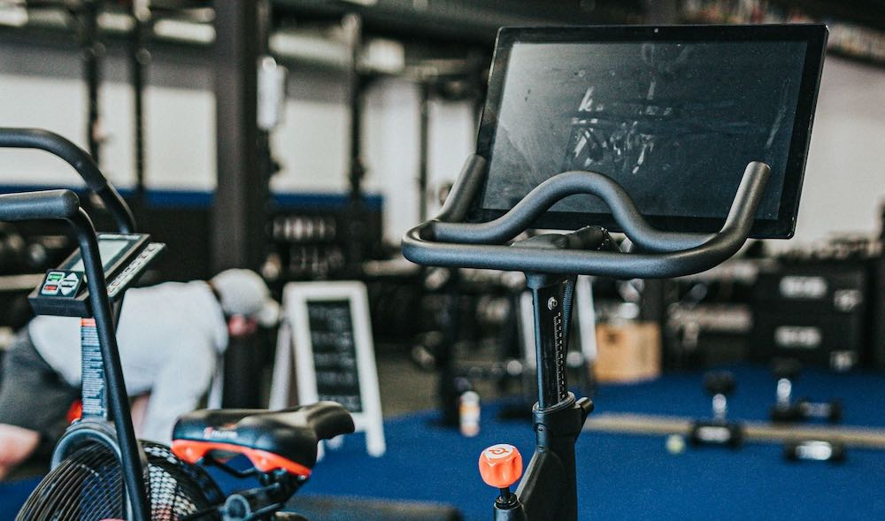

Sleep fixed and Spinning
• Content by Mauricio Wolff • Photo by Andrew Valdivia
Finally! I've fixed my sleep. Kinda.
I did wake up at some point, went to the bathroom, then came back to bed and slept. That was good. I don't know what time it was.
Then I woke up again at some point. Kept my eyes closed, didn't want to know what time it was. Until I did. It was 3:53 am.
This time though, I tried a different approach. I started to tell a story that I know, eyes closed, remembering all the details. At some point I realized I slept, because I woke up again and was dreaming something different than the story. Then the strategy was to keep the story going from the moment I stopped telling it in my mind. If I didn't remember exactly where I stopped, I'd rewind to the last time I remembered it.
And it worked!!!
I slept for about 8 hours, for the first time in a few days.
I'm optimistic about the adaptation of the diet now. I'll buy some ketones strips from Amazon to check if I'm in ketosis already, just to make sure. And because I like to measure things.
Another thing I did today was to start the day with 1 liter of water. Since I wasn't drinking enough water, it's a way to ensure I'll drink enough water throughout the day. It's easier for me if I do it in batches of 1 liter, 3 times a day (morning, noon, evening).
Let's see how it goes.
Spinning
Yesterday evening I went for a spinning class. Well, not really, it's one of those pre-recorded classes on the fancy bikes. 30 minutes of HIIT, with lots of climbing and sprints. The objective is to sweat, and man... I sweat a lot. Another point in doing that class is that I've done it many times before, so I can compare results and how I feel doing it.
Couple of notes: when I'm doing propper spinning classes at Rocycle, that is extremely easy. Since I haven't done since December, it wasn't easy at all. Plan is to restart Rocycle this Friday, let's see if I can make it fly.